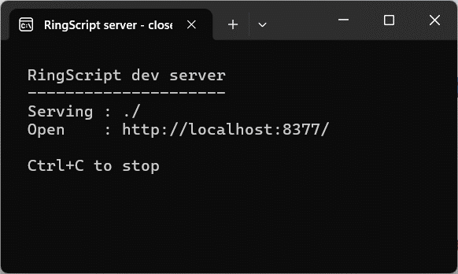
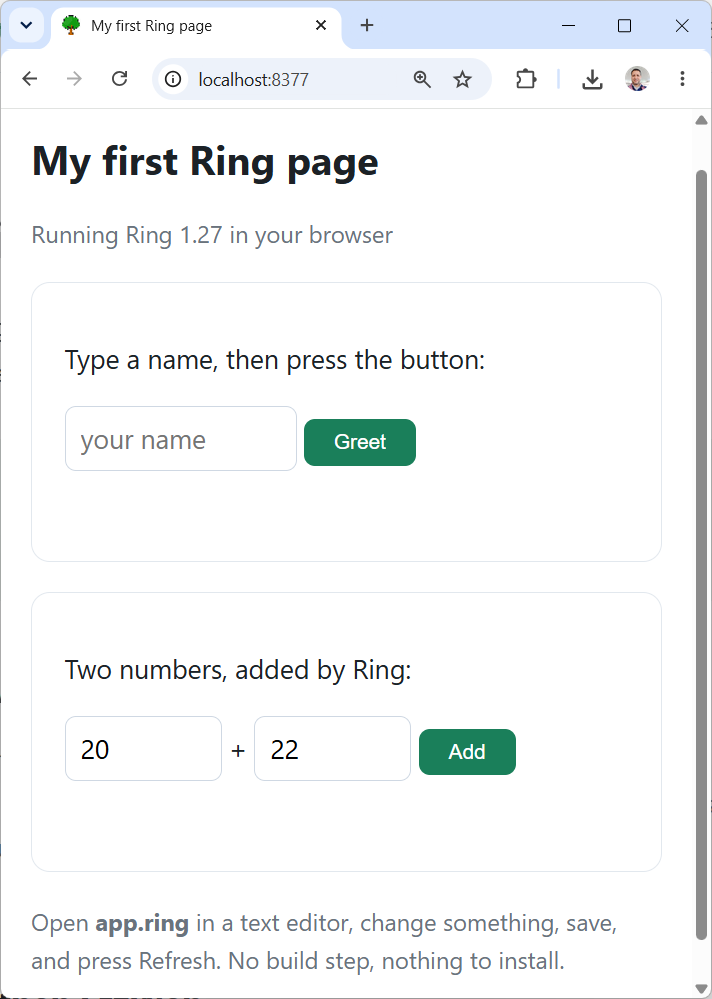

Start here
You do not need to know anything about web development. Download one folder, double-click one file, and a web page written in Ring is running on your machine. Nothing is installed.
What happens, step by step
- Unzip it anywhere — your Desktop is fine. Keep the folder together.
- Double-click the launcher for your system:
start-windows.bat, orstart-mac-linux.sh.
On Windows you may first see “Windows protected your PC” — that is SmartScreen, because the little web server is an unsigned program. Click More info, then Run anyway. To avoid it altogether, right-click the zip → Properties → tick Unblock before unzipping. - A small black window opens. That is a web server, running on your own
machine. It is not an error. Leave it open while you work; close it to stop.

This window is the server. Nothing to read or type — just leave it be. - Your browser opens at
localhost:8377and the page is running. Type a name, press the button — that greeting comes from Ring.
Both buttons run Ring functions from app.ring. - Open
app.ringin any text editor, change the greeting, save, and press Refresh in the browser. That is the whole edit cycle: no build step, no compiler, no tools.
What is in the folder
Only two of those are RingScript itself: ringscript.js and
ringscript.wasm. To put Ring in a page of your own, copy those two
next to your HTML. That is the entire deployment story — any web host will serve
them, and there is no server-side component.
What RingScript is — and what it is not
It is
The Ring language running inside a web page, so the logic of a page can be written in Ring instead of JavaScript.
Your rules, calculations and decisions — the part you already know how to write — running where a browser can reach them.
It is not
A way to run Ring programs you already have. A desktop program will not run here: anything using RingQt, GUILib, windows or forms draws through Qt, which does not exist in a browser.
There is also no disk access, no system(), and no database
opened from a file — a browser tab has none of those.
Take a desktop clock program — the kind that opens a window with a ticking clock face. It cannot be loaded and run here. But the same idea works perfectly on the web, and the starter kit includes exactly that: the face is drawn in the page, and Ring works out where the hands point. The clock, step by step builds it from nothing in about ten minutes.
That is the pattern in general. What carries over is your Ring — the logic, the rules, the arithmetic. What changes is the screen it draws on, and where the data comes from: a server rather than a disk.
If you would rather not download anything
The Playground runs Ring in your browser right now, with 24 ready examples to edit and run. It is the fastest way to confirm this is really Ring before you install a thing.
When you want more
The written guides go from this page to the internals, in order:
Getting started ,
then Scripting pages in Ring .
The Q&A answers the questions that come up first — including
how to split your program across several .ring files.